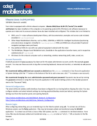
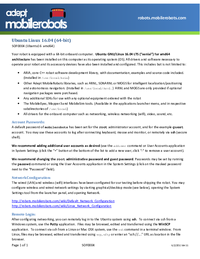

With Omron/Adept MobileRobots
MobileRobots was a business unit of Omron Automation (previously owned by Adept Technology) specializing in providing hardware and software platforms used for education and advanced research in mobile robotics. An archive of the website featuring photos and information on the products is availabe via The Internet Archive. Customizable systems were sold to research universities, institutes, government agencies and private enterprises around the world, and provided with comprehensive software libraries and highly regarded personalized customer support. Omron Industrial Automation closed this business unit and discontinued support for all its products in 2018.
AriaCoda
AriaCoda is a fork of the ARIA open source (GPL) library (from Omron/Adept MobileRobots) Some of the many improvements made include analyzing and testing the code to find and fix bugs, modernizing parts of the C++ codebase to C++17, optimizing a key LIDAR data processing component, removing obscolete code, overall optimization (especially reducing memory allocation and copying). Code that was only used internally by Adept/Omron was removed. (The ARIA library was used both internally for Omron Automation's industral mobile robot products, and provided directly to research customers as a development SDK.) A simple continuous integration job was added to perform test builds with various compilers and platforms. (ARIA has never had automatable unit tests; I have added a few but not many yet.) Some bug fixes and improvements have been done to support users previously using ARIA or who are using ROS with MobileRobots hardware platforms.
The git changelog for AriaCoda can be found here.
The AriaCoda Github page can be found here.
AMRISim

AMRISim is a fork of the open source (GPL) MobileSim mobile robot simulator (from Omron/Adept MobileRobots). I have made various improvements such as adding infrastructure to support multiple interfaces and adding a new ROS interface in addition to the existing Pioneer/ARIA interface, modernizing and optimizing parts of the C++ code, analyzing, testing and fixing bugs and assisting AMRISim users. (Upgrading to GTK4 was also planned but not yet started.)
The git changelog for AMRISim can be found here.
The AMRISim Github page can be found here.
User Documentation
At MobileRobots I led several initiatives to improve, expand and polish customer documentation and manuals.
- I ensured that C++ library APIs used by customers were comprehensively and accurately documented with consistent, clear API documentation (using Doxygen to generate documentation), that example programs were useful and easy to understand, and wrote various tutorials and knowlege base articles published on the support website.
- I updated and modernized the existing product user manuals. I added information and diagrams and fixed issues based on customer support feedback.
- I co-authored manuals for two new products including introductory explanations, all reference information, diagrams, schematics and step-by-step instructions, and safety information.
- I helped create the manual for a new product variant by adapting an existing manual, making accurate changes and adapting scope of information included to fit target market.
- Led the creation of a library of modular short guides for each optional accessory available for products, with key information, quick start guide and links to additional documentation.
- Helped create and later led the maintainaince of a comprehensive online knowlege base of information and infrastructure for distributing above documentation along with software releases and updates.
- Worked closely with MobileRobots customer support, hardware engineering, production/assembly, and marketing departments, and Omron/Adept technical documentation and other departments.
- Worked with customer support staff to moderate and administer user discussion lists (specific related to development software).
- Covered for customer support staff on hardware customer problems when neccesary, expanded knowlege of hardware aspects of products.
- Customer documentation was created using Doxygen (API docs), MS Word, Madcap Flare, and ReStructured Text (product manuals and accessory guides), and customized MediaWiki installation (knowlege base and document/software distribution support site.)


 


Excerpts of the above work are available privately upon request.
A partial archive of the public Omron/Adept MobileRobots support knowlege base and downloads website is available at The Internet Archive
Other
TODO